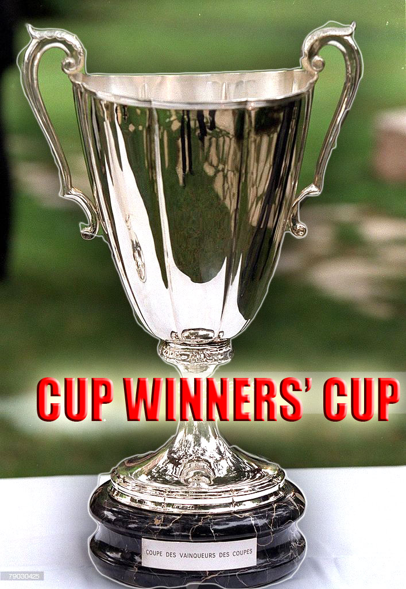
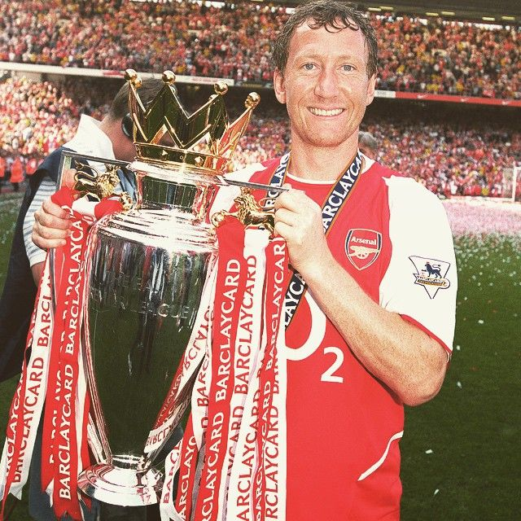

Trofeji nogometnog kluba Arsenal
Arsenal je jedan od najtrofejnijih nogometnih klubova u Engleskoj i Europi. Klub je osvojio brojne trofeje tijekom svoje povijesti, uključujući naslove u domaćim i međunarodnim natjecanjima. Evo nekoliko najvažnijih trofeja i postignuća u povijesti kluba:
1. Engleska Prvenstva (Premier League / First Division)
Arsenal je 13 puta osvojio englesko prvenstvo, a to je jedno od najprestižnijih dostignuća kluba. Neki od ključnih trenutaka uključuju:
- 1991. – Arsenal je osvojio naslov pod vodstvom Georgea Grahama, s izvanrednom obrambenom čvrstoćom.
- 2004. – Sezona "Invincibles" – Arsenal je osvojio prvenstvo bez da je izgubio niti jednu utakmicu u cijeloj sezoni, postavši prvak s rekordnih 26 pobjeda i 12 remija.
 - EPL Trophy.jpg)
2. FA Cup
Arsenal je najtrofejniji klub u povijesti FA Cupa s 14 osvojenih naslova (najviše od svih engleskih klubova). To uključuje:
- 1993. – Arsenal je osvojio "Double", istovremeno osvajajući FA Cup i Premier League.
- 2014. – Nakon duže stanke, Arsenal je ponovno osvojio FA Cup pod vodstvom Arsènea Wengera, što je bio početak njihove pobjedničke serije u tom natjecanju.

3. Liga Kup (Carabao Cup / EFL Cup)
Arsenal je osvojio Liga Kup dva puta:
- 1987. – Arsenal je pobijedio Liverpool u finalu.
- 1993. – Pobjeda protiv Sheffield Wednesday u finalu.

4. FA Community Shield
Arsenal je osvojio FA Community Shield 15 puta, čime je postao jedan od najuspješnijih klubova u povijesti ovog natjecanja.

5. Kup Pobjednika Kupa (Cup Winners' Cup)
Arsenal je osvojio Kup Pobjednika Kupa 1994. godine, pobijedivši Parma u finalu.
Sezona "Invincibles" (2003/04)
Jedna od najlegendarnijih sezona u povijesti Arsenala bila je sezona 2003/04, kada su postali prvaci Engleske bez da su izgubili nijednu utakmicu. Taj izvanredan podvig učinio je Arsenal jednim od samo nekoliko klubova u povijesti engleskog nogometa koji su završili sezonu bez poraza.
Detalji sezone:
- Arsenal je završio sezonu s 26 pobjeda i 12 remija, bez jedne jedine poraze.
- Ekipa koju je vodio Arsène Wenger bila je izuzetno jaka, s ključnim igračima kao što su Thierry Henry, Patrick Vieira, Robert Pirès, i Dennis Bergkamp.
- Arsenal je završio sezonu sa 90 bodova, 11 bodova ispred drugoplasiranog Chelseaja.
- Ovo je bila prva takva sezona u engleskom nogometu od vremena kada je liga bila poznata kao First Division.
- Arsenal je, iako nisu imali jednog od svojih ključnih igrača Thierryja Henryja u nekim utakmicama, pokazao nevjerojatnu dosljednost, disciplinu i kvalitetu igre.
Zašto je ova sezona posebna?
- "Invincibles" su uspjeli održati nevjerojatan rekord, a njihov uspjeh nije bio samo rezultat napadačke igre, već i snažne obrane koja je u ključnim trenucima bila gotovo neprobojna.
- Thierry Henry, koji je bio najbolji strijelac lige, igrao je ključnu ulogu u uspjehu, a cijela momčad je bila usmjerena prema "pobjedničkoj filozofiji".
- Sezona 2003/04 bila je dokaz da se može pobijediti bez da se gubi, postavljajući visok standard u engleskom nogometu.
Ova sezona ostaje jedan od najvećih podviga u povijesti engleskog nogometa, i jedan od najvećih u povijesti Arsenala. "Invincibles" se pamte ne samo po uspjehu, već i po stilu igre, koji je pomogao oblikovati moderni nogomet.
Za više informacija, pogledajte video o ovoj nevjerojatnoj sezoni na YouTubeu:
Sezona Invincibles - YouTube Video